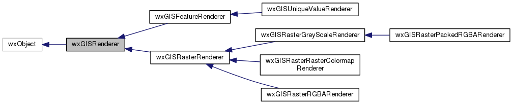
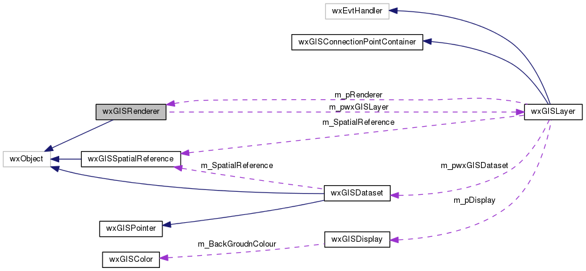

|
|
Version: 0.6.0 |


wxGISRenderer Class Referenceabstract
The base class for renderers. More...
#include <renderer.h>
Inheritance diagram for wxGISRenderer:

Collaboration diagram for wxGISRenderer:

Public Member Functions | |
| wxGISRenderer (wxGISLayer *pwxGISLayer=NULL) | |
| virtual bool | CanRender (wxGISLayer *const pwxGISLayer) const |
| virtual wxString | GetName (void) const |
| virtual wxGISEnumRendererType | GetType (void) const |
| virtual bool | Draw (wxGISEnumDrawPhase DrawPhase, wxGISDisplay *const pDisplay, ITrackCancel *const pTrackCancel=NULL)=0 |
| virtual bool | Apply (ITrackCancel *const pTrackCancel=NULL)=0 |
Protected Attributes | |
| wxGISLayer *const | m_pwxGISLayer |
Detailed Description
The base class for renderers.
The documentation for this class was generated from the following files:
- /home/bishop/work/projects/nextgismanager/include/wxgis/carto/renderer.h
- /home/bishop/work/projects/nextgismanager/src/carto/renderer.cpp
- Generated on Fri Sep 26 2014 01:11:02 for ngm by
 1.8.6
1.8.6